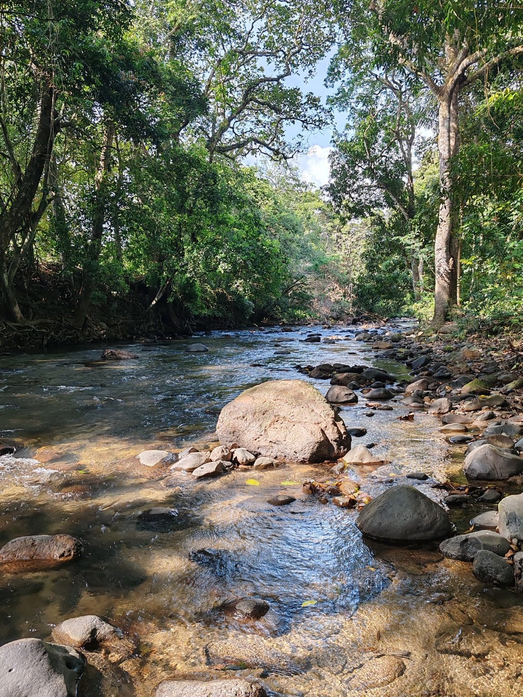
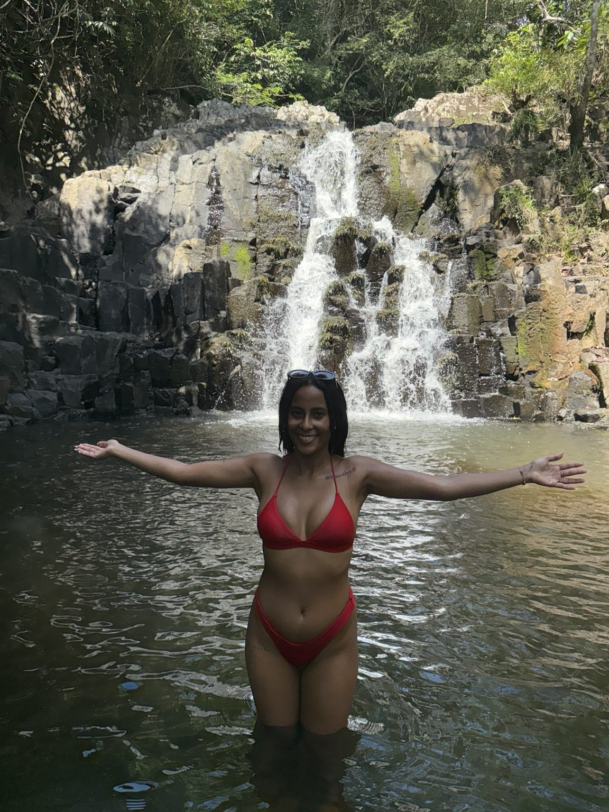
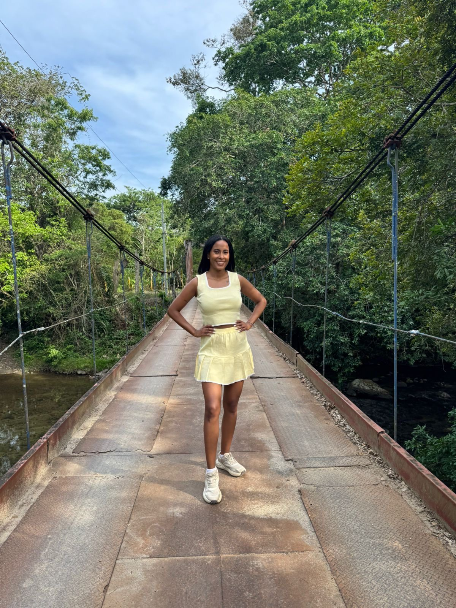
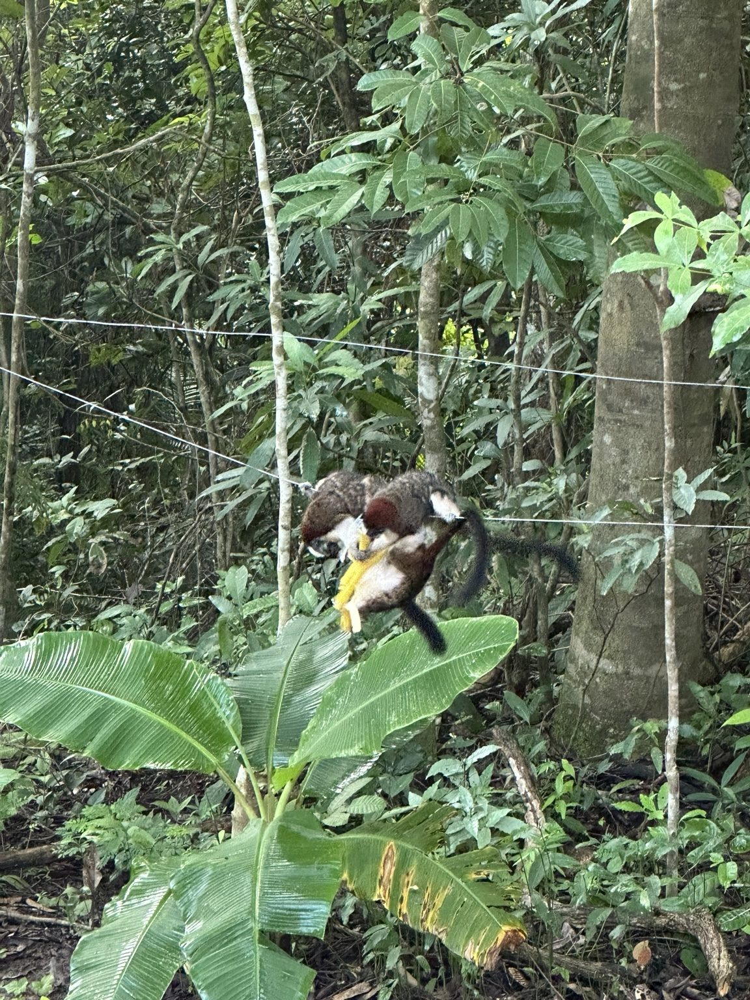
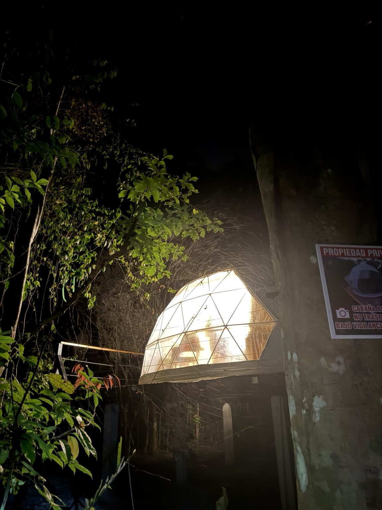

River access
Relax beside the Zaratí River and enjoy the sandy, beach-like recreation area. Conditions can change after heavy rain.

Waterfall walk
A scenic waterfall can be reached by walking through the natural area. Ask for the latest trail conditions before setting out.

Trails & bridges
Explore roughly one kilometre of riverside trails, plus additional pathways around the five-acre property.

Wildlife
White-faced monkeys, sloths, armadillos, toucans and many birds have been seen around the property. Sightings are never guaranteed.

Rainforest nights
Enjoy the sound of the river, insects and forest after dark. Path lighting helps with movement around designated areas.

Slow moments
Relax on the deck, enjoy a simple meal, read by the panoramic window or arrange breakfast in advance.